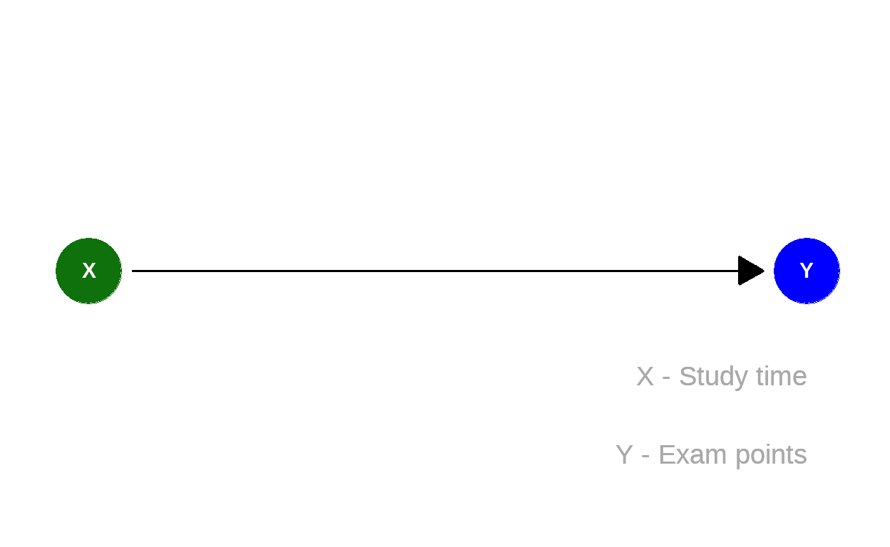

Lernziele
In diesem Modul lernen Sie:
- wie Counterfactuals bestimmt werden können.
Der nicht-gegangene Weg
Bei der (rückwirkenden) Beurteilung von Handlungen fragen wir uns häufig: Wie wäre es gewesen, wenn ich mich anders entschieden hätte?
Zum Beispiel bei der Beurteilung des menschlichen Einflusses auf den Klimawandel: Wie wäre die Erderwärmung, wenn es die Industialisierung nicht gegeben hätte?
Oder zum Beispiel bei Fragen einer möglichen Diskriminierung: Hätte ich den Kredit bekommen, wenn ich nicht einer ethnischen Minderheit angehören würde?
Entscheidend ist bei diesen Fragen und Überlegungen: Wir sind den einen Weg gegangen und kennen das Ergebnis.
Uns interessiert aber auch, wie das Ergebnis gewesen wäre, wenn wir den anderen Weg gegangen wären. Wir wollen das Counterfactual bestimmen. Dieser Wert ist kontrafaktisch in dem Sinne, dass er in der Realität nicht vorliegt, da ein anderes der potenziellen Ergebnisse vorliegt.
Hinweis: Siehe Modul 1.

Quelle: https://pixabay.com/de/photos/wald-pfad-weggabelung-weg-b%c3%a4ume-6607631/
Wir wissen, was passiert ist, nachdem wir links abgebogen sind. Wir wollen nun wissen, was passiert wäre, wenn wir rechts abgebogen wären – mit dem Wissen des Ergebnisses nach der Abbiegung nach links.
Dies ist in der kausalen Leiter nach Pearl die höchste Stufe:
- Counterfactuals: – Vorstellung: Was wäre gewesen?
Wie haben \(X=x'\) und als Folge \(Y=y'\) beobachtet. Wie wahrscheinlich ist dann \(Y=y\), wenn ich \(X=x\) gesetzt hätte? Formal: \(Pr(y_x|x',y')\)
Hinweis: Siehe Modul 3.
Lernen und Klausurerfolg
Das Phänomen kennen sicherlich viele: Sie lernen für eine Klausur, z. B. 10 Stunden. Sie erreichen in der Klausur eine gute Note, sagen wir mit 50 Punkten.
Hätte ich mehr gelernt, etwa 20 Stunden, dann hätte ich eine sehr gute Note erreicht.
Gehen wir – extrem stark vereinfacht – von folgendem kausalen Diagramm aus:

Dann ist
Hinweis: In Wirklichkeit gibt es natürlich viele weitere Faktoren, die hier eine Rolle spielen, dieses Beispiel ist eine Karikatur der Wirklichkeit mit dem Ziel das Konzept zu illustrieren. Das Beispiel hat nicht den Anspruch die Wirklichkeit zu beschreiben!
Das kausale Modell des Graphen \(\color{green}{X} \rightarrow \color{blue}{Y}\) besteht aus zwei Zuweisungen:
- \(\color{green}{X} = U_{\color{green}{X}}\)
- \(\color{blue}{Y} = f_{\color{blue}{Y}}(\color{green}{X},U_{\color{blue}{Y}})\)
Inklusive der externen Faktoren \(U_{\color{green}{X}}\) und \(U_{\color{blue}{Y}}\) sieht das kausale Diagram wie folgt aus:

Treffen wir noch eine stark vereinfachende Annahme:
\[f_{\color{blue}{Y}}(\color{green}{X},U_{\color{blue}{Y}}) = 2 \cdot \color{green}{X} + U_{\color{blue}{Y}}\]
Das bedeutet, dass der Mittelwert von \(\color{blue}{Y}\) mit jeder Einheit von \(\color{green}{X}\) um \(2\) Einheiten steigt. Dabei liegt der Mittelwert von \(U_{\color{blue}{Y}}\) bei Null.
Abduktion
Wir nehmen an:
- \(\color{green}{X} = U_{\color{green}{X}}\)
- \(\color{blue}{Y} = f_{\color{blue}{Y}}(\color{green}{X},U_{\color{blue}{Y}}) = 2 \cdot \color{green}{X} + U_{\color{blue}{Y}}\)
“Sie lernen für eine Klausur 10 Stunden. Sie erreichen in der Klausur eine gute Note, sagen wir mit 50 Punkten.”
Wir wissen jetzt also, was wir für Sie beobachtet haben: \(\color{green}{x'}=10\) und \(\color{blue}{y'}=50\).
Damit wissen wir hier:
- \(U_{\color{green}{x'}}=10\)
- \(U_{\color{blue}{y'}}=\color{blue}{y'}-2\cdot \color{green}{x'}= 50 - 2 \cdot 10 = 30\)
Mit anderen Worten: Wir haben die beobachteten Daten \(\color{green}{x'}, \color{blue}{y'}\) genutzt, um unser Wissen über \(U_{\color{green}{X}}\) und \(U_{\color{blue}{Y}}\) zu aktualisieren.
Aktion
“Hätte ich mehr gelernt, zum Beispiel 20 Stunden.”
Wir wollen also wissen, was wäre der Effekt einer Handlung im Sinne von \(do(\color{green}{x}=20)\), also anstelle von
\[\color{green}{X} = U_{\color{green}{X}}\]
lautet das aktualisierte, modifizierte kausale Modell
\[do(\color{green}{x})=20.\]
Der Rest bleibt aber unverändert – inbesondere gehen wir weiterhin davon aus, dass für Sie \(U_{\color{blue}{Y}}=30\) ist.
Vorhersage
Im modifizierten Modell gilt dann mit
\[do(\color{green}{x})=20\]
und gegeben die Beobachtung \(\color{green}{x'}=10, \color{blue}{y'}=50\)
- (\(U_{\color{green}{x'}}=10\))
- \(U_{\color{blue}{y'}}=\color{blue}{y'}-2\cdot \color{green}{x'}= 50 - 2 \cdot 10 = 30\)
für das Counterfactual:
\[\color{blue}{y}=2\cdot\color{green}{x}+\underbrace{U_{\color{blue}{y}}}_{=U_{\color{blue}{y'}}}=2\cdot 20 + 30 = 70.\]
Zusammenfassung
Die Berechnung eines Counterfactuals erfolgt in 3 Schritten:
Abduktion: Nutzen der beobachteten Werte \(x', y'\) um die Verteilung der externen, unbekannten Ursachen \(U\) zu bestimmen.
Aktion: Modifikation des Modells, so dass Pfeile in \(X\) gelöscht werden und \(X=x\) gilt.
Vorhersage: Verwenden des modifizierten Modells aus 2. und der Verteilung von \(U\) aus 1., um den erwarteten Wert des Counterfactuals für \(Y\) zu bestimmen.
Hinweis
Bitte melden Sie Fehler, Unklarheiten und Verbesserungsvorschläge hier.
Das Vorhaben Was, wie, warum? Einstiegskurs Kausale Inferenz (WWWEKI) wird mit Mitteln des Bundesministeriums für Bildung und Forschung unter dem Förderkennzeichen 16DHBQP040 gefördert.